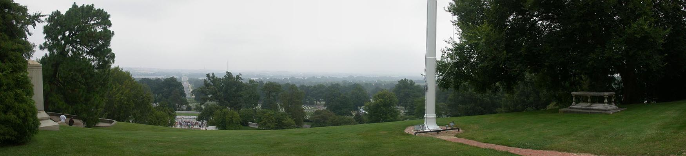

A Free Day in Washington DC / NK010805081042_1904c
8/5/2001

The view from Robert E. Lee's front porch. Too bad it wasn't a nicer day! Washington Monument can be seen in the distance. Crowd of people at the foot of the hill are viewing the Kennedy graves.